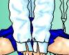
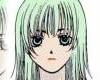
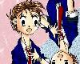
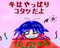

| ART | CREATOR | THUMBNAIL | RECOMMEND | TEXTS BY | |
| #31 | ぺったんこ座りの逆襲
■ FEEDBACK |
ことぶきひかる さん (Homepage) |
 |
いしがきさんへの挑戦状とばかりに（うそ）、ことぶきさん版“ぺったんこ座り”の登場。 | ※現在、ストーリー募集中 (99/10/8) |
| #32 | C HA N G E vol.2
■ FEEDBACK |
午後の緑茶 さん |
シアワセのかけら手に入りまくりの水着初試着場面でしょうか。「どう？」「うぅ…派手すぎるよう」みたいな。圧倒的クオリティの作品です。 | ※現在、ストーリー募集中 (99/10/11) | |
| #33 | POSSESSION!
■ FEEDBACK |
MONDO さん |
どっからどう見ても文句ナシに憑依！なイラストですね。憑依してる少年がノリノリで女の子になりきってます。「おい！」ってツッコミたいくらいですね(笑) | ※現在、ストーリー募集中 (99/10/21) | |
| #34 | 続・ぺったんこ座り
■ FEEDBACK |
ことぶきひかる さん (Homepage) |
なにやら年端もいかなさげな少女がぺたこーんと座ってますね。嬉し泣き（泣き笑い？）の意味するところは……？ | ※現在、ストーリー募集中 (99/11/5) | |
| #35 | 適応戦略
■ FEEDBACK |
Doomsday さん |
 |
SF少女漫画な香りがしますね（個人的に大好きなジャンルです）。色々と想像力を刺激されます。それにしても堂に入った感のあるイラストレーションですね！ | ※現在、ストーリー募集中 (99/11/5) |
| #36 | 少女ぬりえ
■ FEEDBACK |
Doomsday さん |
この微妙な表情はまさに当ギャラリーの精髄！ 姿形は女の子なのに、垣間見える少年のオーラ…難しいニュアンスをよくぞビジュアル化して下さいました！ | ※現在、ストーリー募集中 (99/11/7) | |
| #37 | REONA 五変化
■ FEEDBACK |
MONDO さん |
質量ともに贅沢なレオナちゃんの連作イラストです。少年少女文庫の公認マスコットキャラ・レオナちゃんをよろしくお願いします！ | ※現在、ストーリー募集中 (99/11/22) | |
| #38 | 殴るぞてめぇ！
■ FEEDBACK |
豆電球 さん (Homepage) |
なんとなく「ジュブナイル」って雰囲気のイラストですね。少年ドラマシリーズの一場面みたい。アニメ風輪郭線・塗りの作品が多い中で、豆電球さんのような画風は貴重だと思います。 | ※現在、ストーリー募集中 (99/11/23) | |
| #39 | さらば ぺったんこ座り
■ FEEDBACK |
ことぶきひかる さん (Homepage) |
 |
これは髪型が特徴的ですねぇ。というか髪留め。パーツへのこだわりを刮目して鑑賞いたしましょう！ | ※現在、ストーリー募集中 (99/11/30) |
| #40 | 作品タイトル
■ FEEDBACK |
角 さん |
 |
とにかく復活！なさった「雪森つらら」さん。サンタルックがミステリアス。コタツのミニ絵がめちゃ可愛いです。 | 水谷秋夫さん (99/11/30) |
| ART | CREATOR | THUMBNAIL | RECOMMEND | TEXTS BY | |